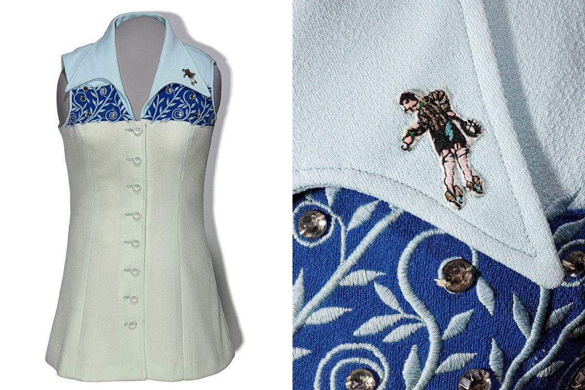

1973
Battle of the Sexes Tennis Match
This is the tennis dress that Billie Jean King wore on September 20, 1973, during the famous Battle of the Sexes match between her and Bobby Riggs. At the time, Riggs was a 55-year-old retired tennis player, and Billie Jean King was one of, if not the, top players in tennis. A year earlier, President Nixon had signed Title IX into law, which outlawed sex-based discrimination in educational and federally-funded programs. As many women tennis players were increasingly pushing for equal opportunities in their sport, Riggs repeatedly made misogynistic, attention-seeking comments about women tennis players, saying that they were inferior and that they should stop complaining. Riggs challenged King to a match earlier in 1973, believing that he could defeat any female tennis player even though he was retired. When King declined, Riggs instead challenged Margaret Court, another professional player who was taken off guard by the request. Riggs won the match, along with $100,000. King saw this and decided to take on Riggs to prove him wrong. She wore this iconic tennis dress, which Ted Tinling designed, for the match. It has an intricate tree branch design adorned with light blue rhinestones. King won decisively by beating Riggs in straight sets (6-4, 6-3, 6-3). The Battle of the Sexes match came at a pivotal time in women’s sports. King felt a massive amount of pressure to represent her entire gender and prove they deserved to be respected and taken seriously in professional sports. King has continued to expand opportunities for women in professional sports. A year after this match, in 1974, she founded the Women’s Sports Foundation, an advocacy group that funds research on women in sports, provides sports opportunities for girls, and defends key legislation like Title IX. King also supported the founding of the Professional Women’s Hockey League in 2023 as one of its board members, and its MVP award (its highest award) is named after her.